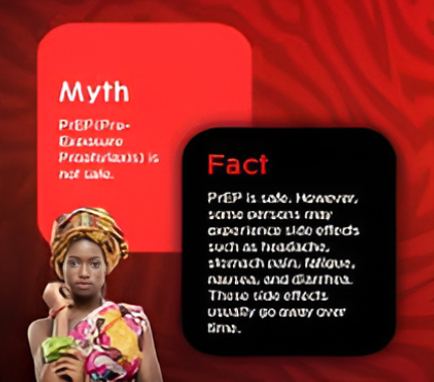

There are many misconceptions about HIV and AIDS. Three misconceptions are that AIDS can spread through casual contact, that sexual intercourse with a virgin will cure AIDS, and that HIV can infect only gay men and drug users. In 2014, some among the British public wrongly thought one could get HIV from kissing (16%), sharing a glass (5%), spitting (16%), a public toilet seat (4%), and coughing or sneezing (5%). Other misconceptions are that any act of anal intercourse between two uninfected gay men can lead to HIV infection, and that open discussion of HIV and homosexuality in schools will lead to increased rates of AIDS.
A small group of individuals continue to dispute the connection between HIV and AIDS, the existence of HIV itself, or the validity of HIV testing and treatment methods. These claims, known as AIDS denialism, have been examined and rejected by the scientific community. However, they have had a significant political impact, particularly in South Africa, where the government's official embrace of AIDS denialism (1999–2005) was responsible for its ineffective response to that country's AIDS epidemic, and has been blamed for hundreds of thousands of avoidable deaths and HIV infections.
Several discredited conspiracy theories have held that HIV was created by scientists, either inadvertently or deliberately. Operation INFEKTION was a worldwide Soviet active measures operation to spread the claim that the United States had created HIV/AIDS. Surveys show that a significant number of people believed—and continue to believe—in such claims